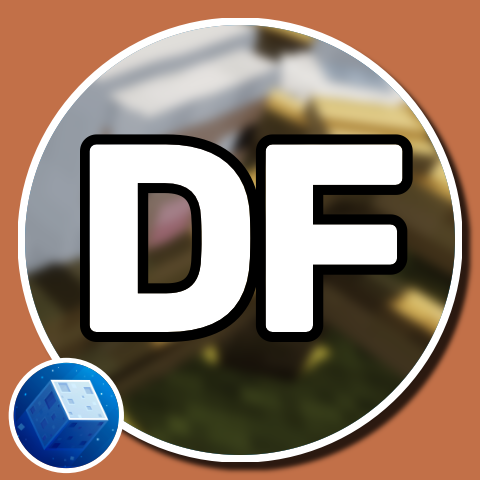

KINGDOM OF RYDA
Mods
•
Drive
Versões
1.21
1.20.6
1.20.4
Resetar
2032 World Height
Increase the build limit to Y=2031 in all dimensions.
1.20.4, 1.20.6, 1.21
AmbientSounds
Adds a rich ambience to the minecraft world.
1.20.4, 1.20.6, 1.21
AppleSkin
Adds various food-related HUD improvements.
1.20.4, 1.20.6, 1.21
Architectury API
An intermediary api aimed to ease developing multiplatform mods.
1.20.4, 1.20.6, 1.21
BetterF3
Highly customizable, more human-readable HUD.
1.20.4, 1.20.6, 1.21
Better Statistics Screen
Replaces the Vanilla statistics screen with an new and improved statistics
1.20.4, 1.20.6, 1.21
Blur
Blur on menus
1.20.4, 1.20.6, 1.21
Bookshelf
An open source library for other mods!
1.20.4
Chat Heads
Player heads next to chat messages
1.20.4, 1.20.6, 1.21
Cherished Worlds
The ability to favorite/pin/bookmark certain worlds.T
1.20.4, 1.20.6, 1.21
Chunky
Pre-generates chunks, quickly, efficiently, and safely
1.20.4, 1.20.6, 1.21
CICADA
Library mod
1.20.4, 1.20.6, 1.21
CIT Resewn
CIT Resewn is MCPatcher's CIT features re-written outside of optifine as a standalone mod for fabric
1.20.4
Clean Tooltips
Overhauls the way enchantments get displayed in the tooltip
1.20.4, 1.20.6
Cloth Config API
Cloth Config API is a config screen api.
1.20.4, 1.20.6, 1.21
Collective
Collective is a shared library mod with common code for all of Serilum's mods.
1.20.4, 1.20.6, 1.21
Continuity
Continuity is a Fabric mod that allows resource packs that use the OptiFine connected textures format
1.20.4, 1.20.6, 1.21
CreativeCore
Nothing else than a simple core mod required by most of CreativeMD's mods.
1.20.4, 1.20.6, 1.21
Cycle Paintings
Cycle Paintings is a minimalistic mod which allows players to cycle through placed paintings
1.20.4, 1.20.6, 1.21

Diagonal Fences
Diagonal Fences makes all kinds of fences able to connect diagonally
1.20.4
Distant Horizons
Bigger view distance
1.20.4, 1.20.6, 1.21
Do a Barrel Roll
Changes elytra flight to be more fun and semi-realistic
1.20.4, 1.20.6, 1.21
Draggable Lists
This mod makes it so resource packs and servers are draggable
1.20.4
Dynamic FPS
Reduce resource usage while Minecraft is in the background or idle.
1.20.4, 1.20.6, 1.21
Eating Animation
Eating Animation a mod that adds sprite animations for edible and drinkable items.
1.20.4, 1.20.6, 1.21
Enderman Overhaul
Enderman Overhaul adds over 20 new endermen variants
1.20.4
Enhanced Block Entities
EBE is a 100% client side Minecraft mod for the Fabric mod loader which aims to increase the performance of block entity rendering
1.20.4, 1.20.6, 1.21
[EMF] Entity Model Features
A mod that adds support for OptiFine's Custom Entity Models.
1.20.4, 1.20.6, 1.21
[ETF] Entity Texture Features
Emissive, Random & Custom texture support for entities.
1.20.4, 1.20.6, 1.21
Entity Culling
Using async path-tracing to hide Block-/Entities that are not visible
1.20.4, 1.20.6, 1.21
Essential Mod
Play together without a server
1.20.4, 1.20.6, 1.21
Fabric API
Essential hooks for modding with Fabric.
1.20.4, 1.20.6, 1.21
Falling Leaves
This Fabric mod for Minecraft 1.20+ adds a neat little particle effect to leaf blocks.
1.20.4, 1.20.6, 1.21
FerriteCore
This mod reduces the memory usage of Minecraft
1.20.4, 1.20.6, 1.21
Forge Config API Port
Forge Config API Port is a modding library for mod developers that provides both NeoForge's & Forge's whole config system to other modding ecosystems.
1.20.4, 1.20.6, 1.21
FPS Reducer
This mod reduces unnecessary GPU and CPU load by reducing the frame rate
1.20.4, 1.20.6, 1.21
Geckolib
A 3D animation library for entities, blocks, items, armor, and more!
1.20.4, 1.20.6, 1.21
Iceberg
This mod is a library for other mods, it doesn't do anything by itself.
1.20.4, 1.20.6, 1.21
ImmediatelyFast
Speed up immediate mode rendering in Minecraft
1.20.4, 1.20.6, 1.21
Indium
Sodium addon providing support for the Fabric Rendering API, based on Indigo
1.20.4, 1.20.6, 1.21
Iris Shaders
A modern shaders mod for Minecraft intended to be compatible with existing OptiFine shader packs
1.20.4, 1.20.6, 1.21
JourneyMap
Real-time mapping in game or in a web browser as you explore.
1.20.4, 1.20.6, 1.21
LazyDFU
Makes the game boot faster by deferring non-essential initialization
1.20.4, 1.20.6, 1.21
Leave My Bars Alone
Makes your food and experience bars visible when riding on a horse.
1.20.4
Legendary Tooltips
Give your rare items a fancier tooltip! Also adds additional tooltip configuration options.
1.20.4, 1.20.6
Lithium
No-compromises game logic/server optimization mod
1.20.4, 1.20.6, 1.21
ModernFix
All-in-one mod that improves performance, reduces memory usage
1.20.4, 1.20.6, 1.21
Mod Menu
Adds a mod menu to view the list of mods you have installed.
1.20.4, 1.20.6, 1.21
Noisium
Optimises worldgen performance for a better gameplay experience.
1.20.4, 1.20.6, 1.21
Nvidium
Fast nvidia only rendering engine for sodium
1.20.4, 1.20.6, 1.21
PandaLib
A Library mod used by The Panda Oliver
1.20.4, 1.20.6, 1.21
Physics Mod Pro
Welcome to a more destructive Minecraft than you've ever seen before!
1.20.4, 1.20.6, 1.21
Presence Footsteps
..An Overly complicated Sound Mod...
1.20.4, 1.20.6, 1.21
Prism
A library all about color! Provides lots of color-related functionality for dependent mods.
1.20.4, 1.20.6
Puzzles Lib
Puzzles Lib is a rather light-weight library consisting of multiple frameworks and utility classes.
1.20.4, 1.20.6, 1.21
Reese's Sodium Options
Alternative Options Menu for Sodium
1.20.4, 1.20.6, 1.21
Resourceful Config
Resourceful Config is a mod that allows for developers to make cross-platform configs
1.20.4, 1.20.6, 1.21
Resourceful Lib
Resourceful Lib is a modding library that contains valuable utilities and APIs developed by Team Resourceful.
1.20.4, 1.20.6, 1.21
Shulker Box Tooltip
View the contents of shulker boxes from your inventory
1.20.4, 1.20.6, 1.21
3D Skin Layers
Render the player skin layer in 3d!
1.20.4, 1.20.6, 1.21
Sodium Extra
A Sodium addon that adds features that shouldn't be in Sodium.
1.20.4, 1.20.6, 1.21
Sodium
A modern rendering engine for Minecraft which greatly improves performance
1.20.4, 1.20.6, 1.21
Sound Physics Remastered
A Minecraft mod that provides realistic sound attenuation, reverberation, and absorption through blocks.
1.20.4, 1.20.6, 1.21
Sounds
Enhance your gameplay with this customizable sound mod that brings a fresh array of sound effects
1.20.4, 1.20.6, 1.21
Tectonic
Massively altered world generation with mountain ranges, underground rivers and more!
1.20.4, 1.20.6, 1.21
What's That Slot?
Utility that highlights which items can be placed in an item slot.
1.20.4
YetAnotherConfigLib
A builder-based configuration library for Minecraft.
1.20.4, 1.20.6, 1.21
YUNG's API
Library mod for YUNG's mods.
1.20.4
YUNG's Better Desert Temples
A complete redesign of Minecraft's desert temples!
1.20.4
YUNG's Better Dungeons
A complete redesign of Minecraft's dungeons!
1.20.4
YUNG's Better End Island
An overhaul of the main End Island where the dragon fight takes place!
1.20.4
YUNG's Better Jungle Temples
A complete redesign of Minecraft's jungle temples!
1.20.4
YUNG's Better Mineshafts
A long-awaited and much-needed abandoned mineshaft overhaul!
1.20.4
YUNG's Better Nether Fortresses
A complete redesign of Minecraft's Nether fortresses!
1.20.4
YUNG's Better Ocean Monuments
A complete redesign of Minecraft's ocean monuments!
1.20.4
YUNG's Better Strongholds
A complete redesign of Minecraft's strongholds!
1.20.4
YUNG's Better Witch Huts
Adds overhauled witch huts to swamps!
1.20.4
YUNG's Extras
Extra structures, features, and vanilla+ content suitable for any modpack!
1.20.4
Advancement Plaques
Replace those boring advancement popups with something flashier.
1.20.4, 1.20.6
Camera Overhaul
A mod that makes gameplay & movement more satisfying through the use of various camera tilting.
1.20.4, 1.21
Connectible Chains
Connect your fences with a decorative chain!
1.20.4, 1.20.6, 1.21
First-person Model
Enables the third-person Model in first-person
1.20.4, 1.20.6, 1.21
Leawind's Third Person
A practical, smooth, feature-rich third person mod
1.20.4
Map Atlases
A vanilla-friendly mini-map/world-map mod using vanilla Maps!
1.20.4
M.R.U
Mineblock's Repeated Utilities
1.20.4, 1.20.6, 1.21
Necronomicon API
A personal utility library for my mods.
1.20.4, 1.20.6, 1.21
Nyf's Spiders
Modifes spiders to be more realistic
1.20.4, 1.21
playerAnimator
Animate the player
1.20.4
Resourcify
In-game resource pack, data pack and shader browser and updater
1.20.4, 1.20.6, 1.21
Rolling Down in the Deep
An addon to Do A Barrel Roll to extend its features to swimming and diving.
1.20.4
Serious Player Animations
A mod adding cool animations to the player.
1.20.4
Serene Seasons
Seasons with changing colors, shifting temperatures, and more!
1.20.4, 1.20.6, 1.21